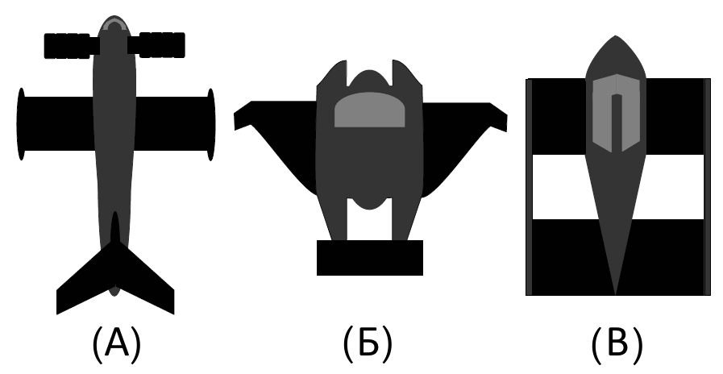
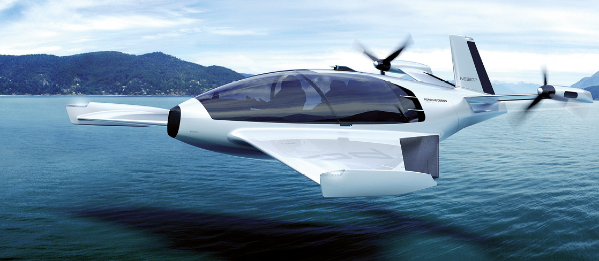

КОНСТРУКЦИЯ
В конструкциях экранопланов можно выделить две школы: советскую (Ростислав Алексеев) с прямым крылом и западную (Александер Мартин Липпиш (нем.)) с треугольным крылом обратной стреловидности с выраженным обратным поперечным V. Схема Р. Е. Алексеева требует бо́льшей работы по стабилизации, но позволяет двигаться с бо́льшими скоростями и в самолётном режиме.
Схема Липпиша включает средства снижения избыточной устойчивости (крыло с обратной стреловидностью и обратное поперечное V), что позволяет снизить недостатки балансировки экраноплана в условиях небольших размеров и скоростей.
Третьей предложенной схемой стала тандемная схема Г. Йорга (ФРГ), однако, несмотря на ряд преимуществ
(автоматическая стабилизация), последователей пока не имеет.

Также идею экранного эффекта используют суда с динамической воздушной подушкой. В отличие от экранопланов, высота их полёта ещё ниже, но по сравнению с судами на подводных крыльях и на воздушной подушке они могут иметь большую скорость при меньших затратах энергии.
ДОСТОИНСТВА
Экранопланы представляют совершенно новую линию развития транспортных средств, неоспоримым достоинством является более низкий уровень расхода топлива, по сравнению с любым зарубежным самолётом, из-за более щадящих и экономичных режимов работы силовой установки на единицу совершения транспортной работы в т/км.

- высокая живучесть: современные экранолёты гораздо безопаснее обычных самолётов, так как в случае обнаружения неисправности в полёте амфибия может сесть на воду даже при сильном волнении;
- достаточно высокая скорость — от 400 до 600 и более км/ч — экранопланы по скоростным, боевым и грузоподъёмным характеристикам превосходят суда на воздушной подушке и суда на подводных крыльях;
- у экранопланов высокая экономичность и более высокая грузоподъёмность по сравнению с самолётами, так как подъемная сила складывается с силой, образующейся от экранного эффекта;
- для военных немаловажна малозаметность экраноплана на радарах вследствие полёта на высоте нескольких метров, быстроходность, невосприимчивость к противокорабельным минам;
- для экранопланов не важен тип поверхности, создающей эффект экрана — они могут перемещаться над замёрзшей водной гладью, снежной равниной, над бездорожьем и т. д
- экранолёты относятся к безаэродромной авиации — для взлёта и посадки им нужна не специально подготовленная взлётная полоса, а лишь достаточная по размерам акватория или ровный участок суши.
НЕДОСТАТКИ
- одним из серьёзных препятствий регулярной эксплуатации экранопланов является то, что место их предполагаемых полётов (вдоль рек) очень точно совпадает с зонами максимальной концентрации птиц;
- низкая маневренность, так как экраноплан, как и самолёт, для изменения направления движения должен создавать центростремительную силу, единственным источником которой является крыло;
- экраноплан «привязан» к поверхности и не может лететь над неровной поверхностью;
- управление экранопланом отличается от управления самолётом и требует специфических навыков;
- процедура старта требует большей тяговооружённости, сравнимой с таковой у транспортного самолёта, и соответственно применения дополнительных стартовых двигателей, не задействованных на маршевом режиме (для крупных экранопланов), либо особых стартовых режимов для основных двигателей, что ведёт к дополнительному расходу топлива.